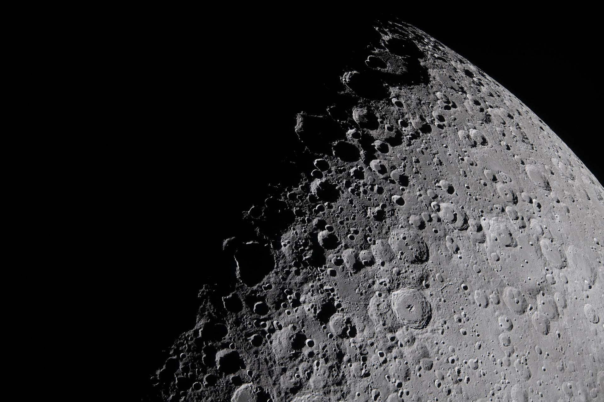
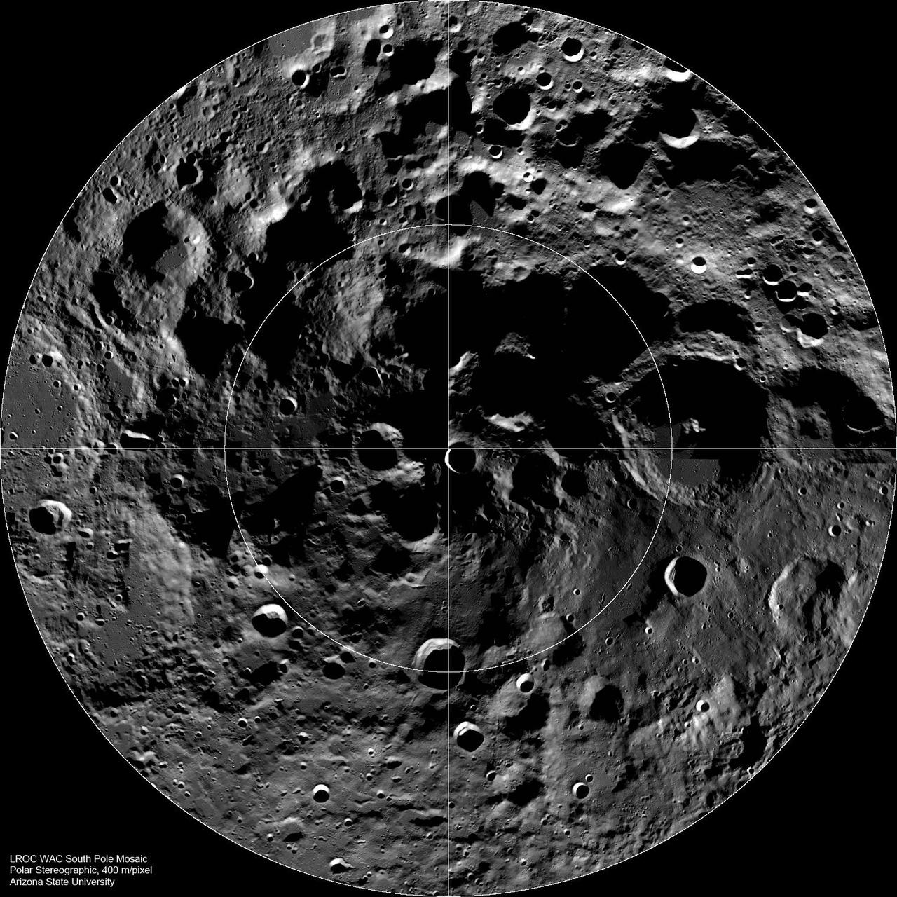
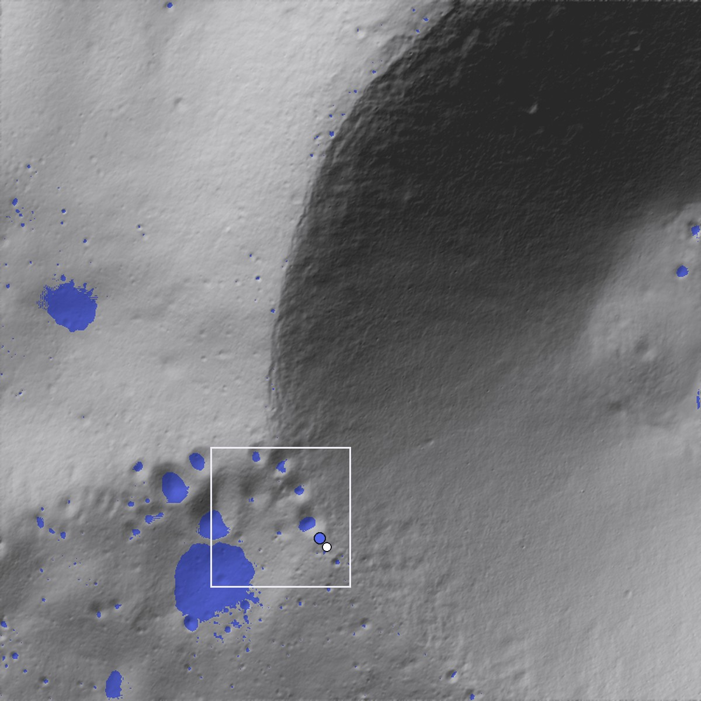

ICEWISEAgua donde nunca sale el Sol.
Un rover autónomo que busca hielo bajo el suelo lunar, decide dónde vale la pena perforar y lo convierte en agua.
Hay hielo en la Luna. Nadie sabe todavía cuánto, ni cómo sacarlo.
Cerca del polo sur, el fondo de muchos cráteres nunca recibe luz solar. A unos −233 °C, el hielo de agua se ha conservado durante miles de millones de años.
Oscuridad
Sin Sol no hay energía solar ni luz para las cámaras.
Incertidumbre
El hielo está repartido en manchas, bajo una capa de polvo seco.
Energía
Con poco hielo, casi toda la energía se gasta en calentar roca.


En el borde del cráter Shackleton.
La colonia ICEWISE se ubica en el borde de Shackleton, a 89,6° de latitud sur, a pocos kilómetros del polo. Es una de las regiones que estudia el programa Artemis.
- Luz solar en el sitio de la estación≈ 83 % del tiempo*
- Distancia a la sombra permanente más cercana≈ 300 m
- Distancia estación – colonia≈ 250 m
- Desnivel en la zona de la misión≈ 800 m
- Temperatura en las sombras permanentes≈ 40 K (−233 °C)
*Calculado por ICEWISE con el relieve real: fracción de direcciones del Sol en las que el horizonte no lo tapa. El interior de Shackleton también está en sombra permanente, pero su borde opuesto queda fuera de este mapa y no lo podemos calcular aquí.
La idea es la misma de todo el proyecto: energía arriba, hielo abajo. En el borde casi siempre da el Sol, así que ahí van la estación y la colonia. A unos cientos de metros, en el fondo de cráteres pequeños, nunca da el Sol, y ahí se conserva el hielo.
Seis pasos, un solo sistema.
Energía en la cresta iluminada, hielo en el fondo oscuro del cráter. El rover va y vuelve entre los dos.
Toma el control de la misión.
Estás en el borde real del cráter Shackleton. Los cristales azules marcan dónde hay hielo bajo el suelo. El rover no los ve: tiene que descubrirlos con su sensor. Pasa el ratón por el terreno para ver qué hay en cada punto, o haz clic para enviar el rover. En la estación, un biofiltro con microorganismos limpia el agua obtenida.
- Pulsa Iniciar. El rover sale de la estación, en el borde iluminado de Shackleton, hacia los cráteres oscuros.
- Sigue la barra del proceso bajo el visor: perforar → horno → trampa fría → biofiltro → filtros → tanque → colonia.
- Mira los cristales azules: es el hielo real. Los cuadros blancos son lo que el rover va midiendo.
- Mueve los controles de la derecha. El recuadro Qué cambia te explica el efecto con números. En la pestaña Biofiltro verás cómo los microorganismos limpian el agua.
Terreno: topografía real del borde del cráter Shackleton (LOLA/LRO, NASA, 10 m por píxel). Las sombras permanentes se calculan con ese relieve; el hielo dentro de ellas es simulado. En el polo el Sol está a solo ~1° sobre el horizonte: la «luz de apoyo» ilumina desde arriba únicamente para ver mejor el relieve.
¿Cuánta agua y a qué coste?
Calculadora basada en las propiedades térmicas reales del suelo lunar. Mueve la concentración de hielo y observa cómo cambia todo.
¿En qué se gasta la energía?
Si cambia…
¿Ya existe algo parecido?
Sí, por partes. Ninguno une las mismas piezas que ICEWISE.
LUWEX (Europa, 2023–2025)
Extrajo, capturó y purificó agua de suelo lunar simulado con hielo, en vacío y con hasta 13 kg por prueba. Su cadena de limpieza combinó microfiltración, ósmosis inversa, carbón activado e intercambio iónico. Alcanzó el nivel de madurez 4 (validado en laboratorio). Es lo más cercano a nuestra planta.
Trampas frías y biorreactores
Paragon Space probó que una trampa fría separa el agua de parte de los contaminantes. La NASA ensaya biorreactores de membrana que eliminan amoníaco del agua de las naves con bacterias, la misma idea que nuestro biofiltro.
Nuestro aporte
Unir un rover que busca y decide dónde perforar, la planta de extracción, un biofiltro con organismos resistentes a la radiación y la entrega a una colonia en Shackleton. Todo dentro de un mismo sistema y simulado sobre la topografía real.
Posible hoy
- Rover polar con luces y navegación
- Detección de hidrógeno con neutrones
- Taladro de 1 m (ya construido para vuelo)
- Prototipo escolar completo
Falta investigar
- Cuánto hielo hay realmente y dónde
- Perforar suelo congelado a −233 °C
- Energía dentro de los cráteres oscuros
- Limpiar el agua de amoníaco y mercurio
Concepto
- El ciclo completo en un solo sistema
- Extracción a gran escala
- Biofiltro con microorganismos: hipótesis que se probará en el laboratorio
Un rover de mesa que hace lo mismo, en arena.
ESP32, sensores sencillos y un lecho de arena con zonas húmedas o congeladas. Demuestra el ciclo completo; no imita las condiciones lunares.
Explora
Chasis 4WD con sensor de distancia para esquivar obstáculos.
Detecta
Un sensor de humedad hace de “detector de hielo” sobre la arena.
Perfora
Taladro con motor paso a paso; una balanza pesa la muestra.
Recupera
Calienta la muestra y condensa el vapor en una placa fría.
Conéctalo a esta página
Conecta el ESP32 por USB y pulsa el botón (Chrome o Edge). Sus sensores reales aparecen aquí al instante.
Aquí verás batería, distancia, humedad, temperatura, avance del taladro y masa recolectada.